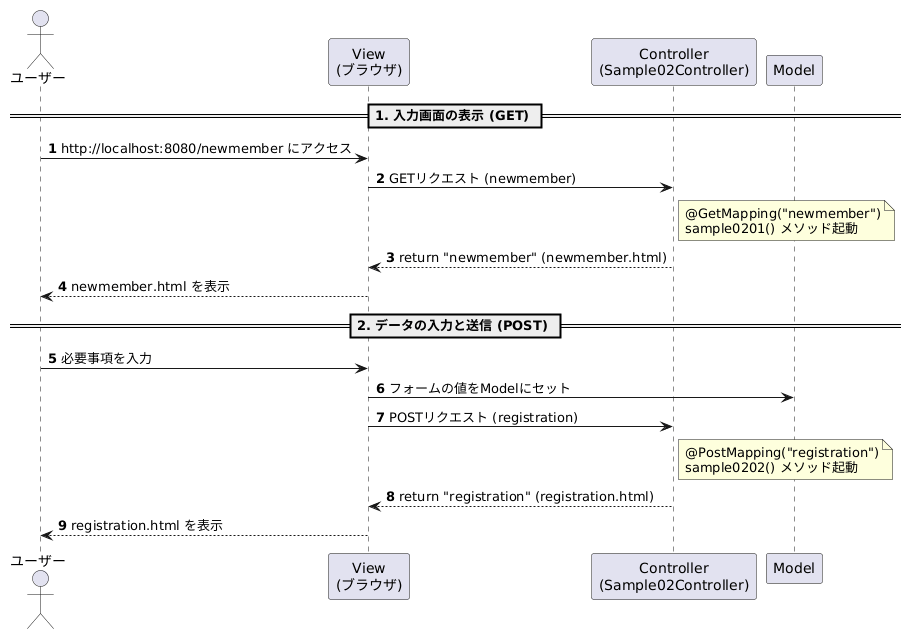
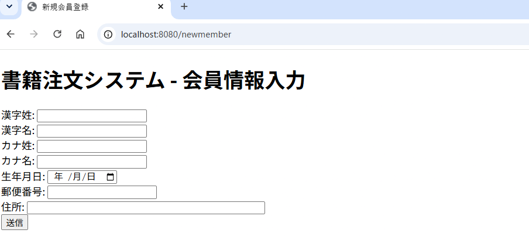
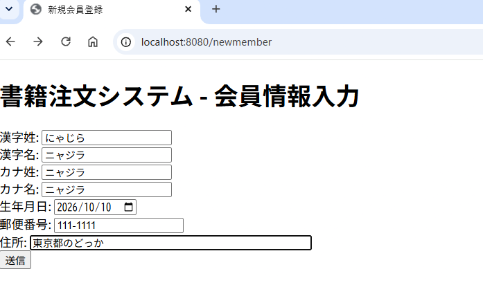
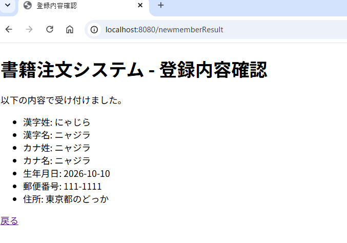
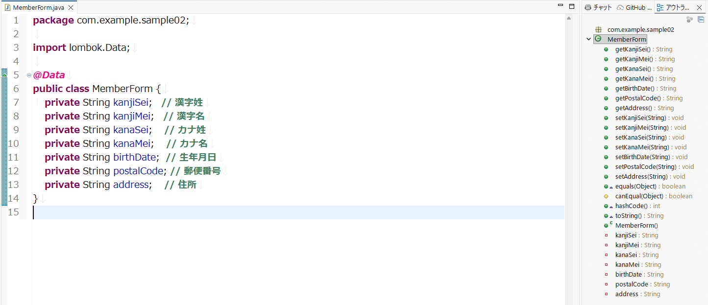

ニャジラのSpring Bootと踊る
第０４回 View-Model-Controller
1. 今回の目的
Modelはデータを運ぶ箱
2. 今回の学習内容
今回は、SpringMVCのModelの基本的な使い方を見てみましょう。
いやね、初めてこのModelの考え方を見た時、「こんな方法があったのか！」と驚きましたよ。
それまでは、HashMapやら、ArrayListでデータの受け渡しをやったり、メソッドの引数でやったりとけっこうめんどかったのですよ。
それもあって、JSPを使って作るのが個人的には好きでした。
だって、PHPや、VBScriptを使って作るのと同じ要領ですからね。
書籍注文システム 「E-Hon」を作りながら邪悪な Spring Boot の研究をしていきましょう。
今回は、View-Model-Controllerが主題ですので、DBもファイルも使わないシステムです。
Modelの役割は、ViewとControllerの間のデータの受け渡し
が主な仕事になります。いやね、初めてこのModelの考え方を見た時、「こんな方法があったのか！」と驚きましたよ。
それまでは、HashMapやら、ArrayListでデータの受け渡しをやったり、メソッドの引数でやったりとけっこうめんどかったのですよ。
それもあって、JSPを使って作るのが個人的には好きでした。
だって、PHPや、VBScriptを使って作るのと同じ要領ですからね。
書籍注文システム 「E-Hon」を作りながら邪悪な Spring Boot の研究をしていきましょう。
今回は、View-Model-Controllerが主題ですので、DBもファイルも使わないシステムです。
３. シーケンス図

ざっと、こんな流れですかね。
４. 実行結果

(入力画面）

(入力）

(入力結果画面）
５. 下準備
| IDE | Eclipse |
| プロジェクト | Sample02 |
| 依存関係 |

|
６. プログラム
Sample02Controller
package com.example.sample02;
import org.springframework.stereotype.Controller;
import org.springframework.ui.Model;
import org.springframework.web.bind.annotation.GetMapping;
import org.springframework.web.bind.annotation.ModelAttribute;
import org.springframework.web.bind.annotation.PostMapping;
@Controller
public class Sample02Controller {
// 1, 2, 3: http://localhost:8080/newmember の処理
@GetMapping("/newmember")
public String sample0201(Model model) {
model.addAttribute("memberForm", new MemberForm());
return "newmember";
}
// 5: /newmemberResult の処理
@PostMapping("/newmemberResult")
public String sample0201Result(@ModelAttribute MemberForm memberForm, Model model) {
model.addAttribute("memberForm", memberForm);
return "newMemberResult";
}
}
【処理の流れ その１】
ブラウザ
↓ http;//localhost:8080/newmember
Sample02Controller
↓
sample0201(Model model)
↓ ここでModelを使うのが主題
newmember.html
ブラウザ
↓ http;//localhost:8080/newmember
Sample02Controller
↓
sample0201(Model model)
↓ ここでModelを使うのが主題
newmember.html
sample0201(Model model) の解説 その１ Model model とは何？
// 1, 2, 3: http://localhost:8080/newmember の処理
@GetMapping("/newmember")
public String sample0201(Model model) {
model.addAttribute("memberForm", new MemberForm());
return "newmember";
}
public String sample0201(Model model)からいきましょう。
わっけ分からんですよね。しかたないからおまじないになってしまう所なんですよ。
public String sample0201(Model model)の引数Model modelって何じゃ？
１，箱を作りましょう
Model modelは、コントローラー（Java側）からビュー（HTML画面側）へデータを渡すための「入れ物（橋渡し役）」です。
Model modelは、Spring Bootがデータを受け渡すための箱を作っていると思って下さい。
箱の中身は空っぽです。まさに、箱だけです。
２，いつ箱を作る？
Model model を「Javaで作ったデータを、画面（HTML）に表示させたいとき」に使います。
３，new がないのになんで使える？
import org.springframework.ui.Model;で使えるようになっています。
ね、だから言ったでしょ、「写経するときは import、アノテーションなしで写経しましょうって。そうしたら、これに気付くと思いますよ。
【動画参照してください】
【Spring Boot#2】アノテーションを打った瞬間、裏で何が起きているのか？［モヤモヤ解消］
わっけ分からんですよね。しかたないからおまじないになってしまう所なんですよ。
public String sample0201(Model model)の引数Model modelって何じゃ？
１，箱を作りましょう
Model modelは、コントローラー（Java側）からビュー（HTML画面側）へデータを渡すための「入れ物（橋渡し役）」です。
Model modelは、Spring Bootがデータを受け渡すための箱を作っていると思って下さい。
箱の中身は空っぽです。まさに、箱だけです。
２，いつ箱を作る？
Model model を「Javaで作ったデータを、画面（HTML）に表示させたいとき」に使います。
３，new がないのになんで使える？
import org.springframework.ui.Model;で使えるようになっています。
ね、だから言ったでしょ、「写経するときは import、アノテーションなしで写経しましょうって。そうしたら、これに気付くと思いますよ。
【動画参照してください】
【Spring Boot#2】アノテーションを打った瞬間、裏で何が起きているのか？［モヤモヤ解消］
model.addAttribute("memberForm", new MemberForm()); の解説
// 1, 2, 3: http://localhost:8080/newmember の処理
@GetMapping("/newmember")
public String sample0201Model model) {
model.addAttribute("memberForm", new MemberForm());
return "newmember";
}
相も変わらず邪悪な！
くっそわからん部分ですな。
model.addAttribute("memberForm", new MemberForm());は、
「画面（HTMLなどのテンプレート）とデータをやり取りするための『空の入れ物』を作って、画面側に渡すこと」です。
１，「空のフォーム用オブジェクト」のインスタンス化
new MemberForm() で、会員登録画面などで入力されるデータを受け取るためのクラス（MemberForm）のインスタンス（実体）を新しく生成しています。
２，View（画面）へのデータの受け渡し
model.addAttribute("キー名", 渡したいオブジェクト) は、Controller から View（この場合は "newmember" という名前のテンプレート）へデータを渡すための仕組みです。
ここでは "memberForm" という名前（キー）を付けて、先ほど作った MemberForm のオブジェクトを登録しています。
３，Thymeleaf などのテンプレートエンジンとの連携
画面側（HTMLなど）で、例えば以下のようにしてこのオブジェクトが使われます。
このように、Thymeleaf などのテンプレートエンジンは、Controller から渡されたオブジェクトを使ってフォームのデータをバインドすることができます。
model.addAttribute("memberForm", new MemberForm()); は、Controller から View へデータを渡すための重要なステップです。
これにより、ユーザーが入力したデータを受け取るためのフォームオブジェクトが画面側で利用可能になります。
くっそわからん部分ですな。
model.addAttribute("memberForm", new MemberForm());は、
「画面（HTMLなどのテンプレート）とデータをやり取りするための『空の入れ物』を作って、画面側に渡すこと」です。
１，「空のフォーム用オブジェクト」のインスタンス化
new MemberForm() で、会員登録画面などで入力されるデータを受け取るためのクラス（MemberForm）のインスタンス（実体）を新しく生成しています。
２，View（画面）へのデータの受け渡し
model.addAttribute("キー名", 渡したいオブジェクト) は、Controller から View（この場合は "newmember" という名前のテンプレート）へデータを渡すための仕組みです。
ここでは "memberForm" という名前（キー）を付けて、先ほど作った MemberForm のオブジェクトを登録しています。
３，Thymeleaf などのテンプレートエンジンとの連携
画面側（HTMLなど）で、例えば以下のようにしてこのオブジェクトが使われます。
<form th:action="@{/register}" th:object="${memberForm}" method="post">
<input type="text" th:field="*{name}" />
</form>
model.addAttribute("memberForm", new MemberForm()); は、Controller から View へデータを渡すための重要なステップです。
これにより、ユーザーが入力したデータを受け取るためのフォームオブジェクトが画面側で利用可能になります。
public String sample0201Result(@ModelAttribute MemberForm memberForm, Model model) の解説
@PostMapping("/newmemberResult")
public String sample0201Result(@ModelAttribute MemberForm memberForm, Model model) {
model.addAttribute("memberForm", memberForm);
return "newMemberResult";
}
１，@ModelAttribute MemberForm memberForm, Model model
1. @ModelAttribute MemberForm memberForm の意味
リクエスト（フォーム送信など）で送られてきたデータを受け取り、Javaのオブジェクト（この場合は MemberForm クラス）に自動的にバインド（格納）するためのアノテーションです。
自動データバインディング: 画面のフォームから送信されたパラメータ名（例: name や email など）と、MemberForm クラスのフィールド名が一致している場合、Springが自動的に値をセットしてくれます。
モデルへの自動追加: このアノテーションがついたオブジェクトは、明示的にコードを書かなくても、自動的に Model に追加されます（デフォルトではクラス名の先頭を小文字にした memberForm というキー名になります）。これにより、次の画面（ビュー）で入力内容を再表示したい場合などにそのまま利用できます。
リクエスト（フォーム送信など）で送られてきたデータを受け取り、Javaのオブジェクト（この場合は MemberForm クラス）に自動的にバインド（格納）するためのアノテーションです。
自動データバインディング: 画面のフォームから送信されたパラメータ名（例: name や email など）と、MemberForm クラスのフィールド名が一致している場合、Springが自動的に値をセットしてくれます。
モデルへの自動追加: このアノテーションがついたオブジェクトは、明示的にコードを書かなくても、自動的に Model に追加されます（デフォルトではクラス名の先頭を小文字にした memberForm というキー名になります）。これにより、次の画面（ビュー）で入力内容を再表示したい場合などにそのまま利用できます。
２. Model model の意味
これは、少し前にお話ししましたが、もう一度おさらいです。
コントローラーからビュー（ThymeleafやJSPなどの画面）へデータを渡すための容器（コンテナ）です。
これは、少し前にお話ししましたが、もう一度おさらいです。
コントローラーからビュー（ThymeleafやJSPなどの画面）へデータを渡すための容器（コンテナ）です。
２，model.addAttribute("memberForm", memberForm); 解説
1. @ModelAttribute MemberForm memberForm の意味
リクエスト（フォーム送信など）で送られてきたデータを受け取り、Javaのオブジェクト（この場合は MemberForm クラス）に自動的にバインド（格納）するためのアノテーションです。
自動データバインディング: 画面のフォームから送信されたパラメータ名（例: name や email など）と、MemberForm クラスのフィールド名が一致している場合、Springが自動的に値をセットしてくれます。
モデルへの自動追加: このアノテーションがついたオブジェクトは、明示的にコードを書かなくても、自動的に Model に追加されます（デフォルトではクラス名の先頭を小文字にした memberForm というキー名になります）。これにより、次の画面（ビュー）で入力内容を再表示したい場合などにそのまま利用できます。
リクエスト（フォーム送信など）で送られてきたデータを受け取り、Javaのオブジェクト（この場合は MemberForm クラス）に自動的にバインド（格納）するためのアノテーションです。
自動データバインディング: 画面のフォームから送信されたパラメータ名（例: name や email など）と、MemberForm クラスのフィールド名が一致している場合、Springが自動的に値をセットしてくれます。
モデルへの自動追加: このアノテーションがついたオブジェクトは、明示的にコードを書かなくても、自動的に Model に追加されます（デフォルトではクラス名の先頭を小文字にした memberForm というキー名になります）。これにより、次の画面（ビュー）で入力内容を再表示したい場合などにそのまま利用できます。
２. Model model の意味
これは、少し前にお話ししましたが、もう一度おさらいです。
コントローラーからビュー（ThymeleafやJSPなどの画面）へデータを渡すための容器（コンテナ）です。
これは、少し前にお話ししましたが、もう一度おさらいです。
コントローラーからビュー（ThymeleafやJSPなどの画面）へデータを渡すための容器（コンテナ）です。
newmember.html
<!DOCTYPE html>
<html xmlns:th="http://www.thymeleaf.org"> ①
<html lang="ja">
<head>
<meta charset="UTF-8">
<title>新規会員登録</title>
</head>
<body>
<h1>書籍注文システム - 会員情報入力</h1>
<form th:action="@{/newmemberResult}" th:object="${memberForm}" method="post"> ②
<div>
<label>漢字姓: <input type="text" th:field="*{kanjiSei}" /></label>
</div>
<div>
<label>漢字名: <input type="text" th:field="*{kanjiMei}" /></label>
</div>
<div>
<label>カナ姓: <input type="text" th:field="*{kanaSei}" /></label>
</div>
<div>
<label>カナ名: <input type="text" th:field="*{kanaMei}" /></label>
</div>
<div>
<label>生年月日: <input type="date" th:field="*{birthDate}" /></label>
</div>
<div>
<label>郵便番号: <input type="text" th:field="*{postalCode}" /></label>
</div>
<div>
<label>住所: <input type="text" th:field="*{address}" size="50" /></label>
</div>
<div>
<button type="submit">送信</button> <!-- 送信ボタン -->
</div>
</form>
</body>
</html>
① <html xmlns:th="http://www.thymeleaf.org">
Javaのサーバーサイドテンプレートエンジンである Thymeleaf（タイムリーフ） をHTMLファイル内で使用するために記述する 名前空間（Namespace）の宣言 です。
② <form th:action="@{/newmemberResult}" th:object="${memberForm}" method="post">
Javaのサーバーサイドテンプレートエンジンである Thymeleaf（タイムリーフ） をHTMLファイル内で使用するために記述する 名前空間（Namespace）の宣言 です。
② <form th:action="@{/newmemberResult}" th:object="${memberForm}" method="post">
- html の<form> ~ </form> タグ HTMLの <form> タグは、ユーザーからの入力を受け付け、それをサーバー（バックエンド）へ送信するための領域を定義する重要な要素です。
- th:action="@{/newmemberResult}" th: と @ {...} (Thymeleafの機能）
- th:object="${memberForm}"
- th:field="*{kanjiSei}"
@ {...}（リンクURL式）
Thymeleaf独自の書き方で、「コンテキストパスを自動的に考慮したURL」を生成してくれます。
例えば、Spring Bootアプリケーション全体のURLが http://localhost:8080/myapp/ のように、ルートの他に「コンテキストパス（プレフィックス）」を持っている場合でも、Thymeleafが自動的に /myapp/newmemberResult のように正しいパスに書き換えてくれます。
これにより、もし後からアプリのURL構造やプレフィックスを変更したとしても、HTML側のパスを書き直す必要がなくなるというメリットがあります。
例えば、Spring Bootアプリケーション全体のURLが http://localhost:8080/myapp/ のように、ルートの他に「コンテキストパス（プレフィックス）」を持っている場合でも、Thymeleafが自動的に /myapp/newmemberResult のように正しいパスに書き換えてくれます。
これにより、もし後からアプリのURL構造やプレフィックスを変更したとしても、HTML側のパスを書き直す必要がなくなるというメリットがあります。
Thymeleafを使ったHTMLフォームにおいて、「このフォーム全体を、Java側から渡された特定のオブジェクト（データを入れる箱）と結びつける（バインドする）」ための設定です。
これによって、HTMLの入力欄とJava側のデータがシームレスにつながります。
Thymeleafを使ったHTMLフォームにおいて、「入力欄（この場合は姓の漢字入力欄）と、Java側のオブジェクトにある特定のフィールド（属性）を双方向につなぐ（バインドする）」ための設定です。
th:field:入力要素（<input> や <select> など）に対して、Javaオブジェクトのフィールドを割り当てるためのThymeleafの属性です。
*（アスターリスク）:少し前に出てきた th:object="${memberForm}" で指定した「親オブジェクト（memberForm）」の中身を指す省略記号です。
{kanjiSei}:memberForm というJavaのクラスにあるプロパティ名（フィールド名）です（例: private String kanjiSei; のような変数）。
つまり、th:field="*{kanjiSei}" は、「memberForm.kanjiSei」 という変数とこの入力欄を結びつけています。
th:field:入力要素（<input> や <select> など）に対して、Javaオブジェクトのフィールドを割り当てるためのThymeleafの属性です。
*（アスターリスク）:少し前に出てきた th:object="${memberForm}" で指定した「親オブジェクト（memberForm）」の中身を指す省略記号です。
{kanjiSei}:memberForm というJavaのクラスにあるプロパティ名（フィールド名）です（例: private String kanjiSei; のような変数）。
つまり、th:field="*{kanjiSei}" は、「memberForm.kanjiSei」 という変数とこの入力欄を結びつけています。
newMemberResult.html
<!DOCTYPE html>
<html xmlns:th="http://www.thymeleaf.org">
<head>
<meta charset="UTF-8">
<title>登録内容確認</title>
</head>
<body>
<h1>書籍注文システム - 登録内容確認</h1>
<p>以下の内容で受け付けました。</p>
<ul>
<li>漢字姓: <span th:text="${memberForm.kanjiSei}"></span></li>
<li>漢字名: <span th:text="${memberForm.memberForm.kanjiMei}"></span></li>
<li>カナ姓: <span th:text="${memberForm.kanaSei}"></span></li>
<li>カナ名: <span th:text="${memberForm.kanaMei}"></span></li>
<li>生年月日: <span th:text="${memberForm.birthDate}"></span></li>
<li>郵便番号: <span th:text="${memberForm.postalCode}"></span></li>
<li>住所: <span th:text="${memberForm.address}"></span></li>
</ul>
<p><a th:href="@{/newmember}">戻る</a></p>
</body>
</html>
th:text="..." （左側）：Thymeleafの機能で、「このタグの中身を、右側で指定したデータに書き換えて表示してね」 という指示です。
${...} （中身の囲み）：Java（サーバー側）から渡されたデータ箱の中から、中身を取り出すためのルールです。
memberForm.kanjiSei （右側の中身）：画面から送られてきた、または画面に表示する「会員情報（フォーム）」のまとまり（オブジェクト）です。
kanjiSei：その中にある「漢字の苗字（姓）」が入っている項目（プロパティ）です。
${...} （中身の囲み）：Java（サーバー側）から渡されたデータ箱の中から、中身を取り出すためのルールです。
memberForm.kanjiSei （右側の中身）：画面から送られてきた、または画面に表示する「会員情報（フォーム）」のまとまり（オブジェクト）です。
kanjiSei：その中にある「漢字の苗字（姓）」が入っている項目（プロパティ）です。
MemberForm.java
package com.example.sample02;
import lombok.Data;
@Data
public class MemberForm {
private String kanjiSei; // 漢字姓
private String kanjiMei; // 漢字名
private String kanaSei; // カナ姓
private String kanaMei; // カナ名
private String birthDate; // 生年月日
private String postalCode; // 郵便番号
private String address; // 住所
}
これが、既に何回も出て来た MemberForm の中身です。
@Dataが Lombok を使用しています。
Lombok は大変便利なツールです。
この素晴らしい所は、setter、getter、toString、equals、hashCode などのメソッドを自動生成してくれる所です。
このおかげで、MemberFormの中身がすっきりして、見やすくなっています。
Lombokを使わない場合は、MemberFormの中身は、kanjiSei、kanjiMei、kanaSei、kanaMei、birthDate、postalCode、addressの７つの変数に対して、setter、getter、toString、equals、hashCodeのメソッドを自分で作らなければなりません。
それは、めんどくさいですよね。
Lombokを使う場合は、@Dataを付けるだけで、setter、getter、toString、equals、hashCodeのメソッドを自動生成してくれます。
@Dataが Lombok を使用しています。
Lombok は大変便利なツールです。

この素晴らしい所は、setter、getter、toString、equals、hashCode などのメソッドを自動生成してくれる所です。
このおかげで、MemberFormの中身がすっきりして、見やすくなっています。
Lombokを使わない場合は、MemberFormの中身は、kanjiSei、kanjiMei、kanaSei、kanaMei、birthDate、postalCode、addressの７つの変数に対して、setter、getter、toString、equals、hashCodeのメソッドを自分で作らなければなりません。
それは、めんどくさいですよね。
Lombokを使う場合は、@Dataを付けるだけで、setter、getter、toString、equals、hashCodeのメソッドを自動生成してくれます。
いかがですか？
Modelがあることによって、Viewの中に余計なプログラムを書く必要がなくなり、Viewの中身がスッキリしましたね。
ViewとControllerを分離する試みは色々なフレームワークで行われていますが、Spring MVCのように、Modelを使ってViewとControllerを分離する方法は、非常に有効な手段です。
昔はですね、Viewの中にプログラムを書いてしまうことが多かったんです。
どんなプログラムかと言うと、DBに書き込むSQL文や、DBからデータを取ってくるSQL文なども、Viewの中に書かれていました。
HTMLはあるわ、SQLはあるわ、JavaScriptはあるわ、CSSはあるわ、もう大変なことになっていました。
MVCモデル？それおいしいの？っていう状態でした。